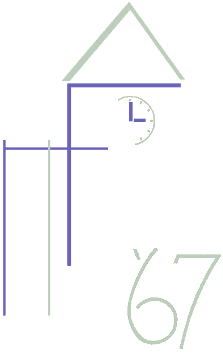

Port Chester High School
Class of 1967

35th Reunion
Please feel free to download this file of the PCHS 1967 members, it is a word.doc file and should be readable by most. If you cannot read it, I can send a floppy disc copy in another format, or just as a long e-mail.
I will update it as I get updates. (Sorry the old one got so stale, it was hard to change, and I never got the "official" version as a basis.) I will try to find missing members and update as I pick up facts. I'll also try to get and update those additions that come to John Grieco and others in PC.
If you have any info on missing names, PLEASE let me know. And if someone you care about is missing, please let me know and I'll try to find her or him. But give me your phone number too as I may need to call for fill clues, like siblings' names, etc. Some of the ones I've found have been real challenges! (I wish that women wouldn't change their names!)
And a final reminder. This list is Copyright 2002 by Philip L. Brown. You are free to use it to find and contact old friends. You may NOT use it for any commercial purpose whatsoever. If in doubt, please ask me. Thanks.
Phil Brown
Port Chester, New York, Senior High School Class of 1967
Zionsville, Indiana
317-873-6971 any time!
 Mail to: browns@iquest.net
Mail to: browns@iquest.netLast updated: 23 July 2002